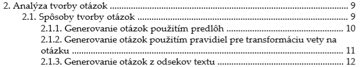

Predmetom 2. zadania je spracovanie vybraného dokumentu (ideálne bakalárskeho projektu) z pôvodného ľubovoľného (Word, OpenOffice, LaTeX, …) formátu do formátu DocBook a vygenerovanie cieľového tvaru v PDF. Výsledný dokument bude mať rozsah minimálne 10 a maximálne 15 strán. Do rozsahu sa nezapočítavajú úvodné strany (obsah, zoznamy obrázkov a tabuliek), použitá literatúra a prílohy.
Na členenie som používal DocBook tagy ako <chapter> pri kapitolách, <section> pri podkapitolách a vnorený <section> pri podpodkapitolách. Obsah je týmto automaticky generovaný. Nižšie je ukážka obsahu z výsledného PDF.
Niektoré slová alebo vety sú v texte tučné, na to som použil tagy <emphasis role="strong">Slovo</emphasis> ktoré urobia bold, alebo miesto "strong" som použil "italic" ktoré spôsobia kurzívu. Pre dosiahnutie členenia textu som používal <itemizedlist> pri odrážkovaní, a pri číslovaní <orderedlist>
Text je plne citovaný, to znamená že každé číslo odkazuje na príslušnú literatúru. Na dosiahnutie tohoto som použil tag <xref linkend="odkaz" />. Na odkazovanie na inú časť textu som zase použil <link linkend="odkaz">(číslo odseku)</link>. Po obsahu je taktiež zoznam obrázkov a tabuliek, ktoré odkazujú na miesta daných elementov v texte.
.Na poznámku pod čiarou som použil tag <footnote>
Na jednotlivé zložky bibliografie som používal tag <bibliomixed>. Ako už je spomenuté v bode 3, bibliografia je zahrnutá na konci dokumentu a všetky odkazy v textových citáciách sú funkčné a odkazujú na danú literatúru.
V texte sa náchadza jedna tabuľka (tabuľka pojmov). Na jej vytvorenie som použil <table>. V texte sa ďalej nachádza niekoľko obrázkov ktoré sú vložené pomocou tagu <imagedata fileref="meno súboru" />. Zoznam obrázkov a tabuliek je hneď po obsahu dokumentu, a bol vytvorený tak, že do thesis.xsl som na riadku 176 zvolil, aby pri tvorbe odsahu tvorilo aj zoznam obrázkov a tabuliek tým, že som doplnil parametre "table" a "figure".
Pre dosiahnutie registra pojmov som použil tag <indexterm> a na dosiahnutie členenia v ňom <primary> a ku kažému primárnemu som priradil niekoľko skundárnych pojmov pomocou tagu <secondary>.
Odstránenie obrázku na začiatku dokumentu som dosiahol odstránením elementu pre vloženie externého obrázku v súbore thesis-tp-fo.xsl. Riadok číslo 47. Odstránené vkladanie názvu kapitol napr. "Kapitola 1" v dokuemtne, thesis.xsl - zakomentovanie riadku 297-302 by to nevkládalo pri kapitole text "kapitola", a potom pridanie pred vlastný názov kapitoly čislo pomocou <xsl:apply-templates select="$node" mode="label.markup"/> a bodku pomocou <xsl:text>. </xsl:text>. XML som overil v nástroji XMLMind a je plne validný.